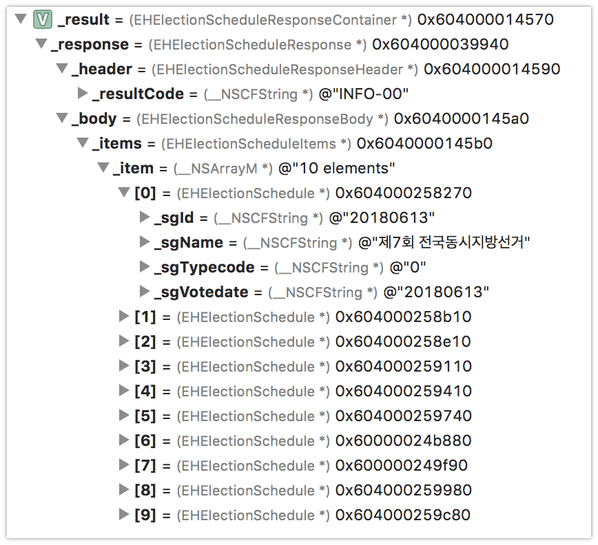

[Objective-C] NSXMLParser로 XML Object Mapper 구현하기 (공공데이터 Response 파싱하기)
-읽음
공공데이터 Open API
data.go.kr에서 다양한 공공데이터 정보를 얻을 수 있습니다. 단순 데이터 파일 또는 Open API형태로 제공하고 있어서 이를 이용해 다양한 서비스를 구현할 수 있습니다.
지역 미세먼지 농도, 날씨 예보, 수질 정보 등등 정말 다양한 정보를 얻을 수 있는데요, 스터디용도로 이 API 중 하나를 선택해서 앱을 구현중입니다.
지방선거 API 활용하기
가장 최신으로 등록된 API를 찾아보니 곧 6월 13일 지방선거를 앞두고 선거정보, 후보자 정보 Open API가 추가되어서 활용해보기로 했습니다.
역시 공공데이터 답게 Response API는 XML을 지원합니다.. 제발 json을 사용해주세요 ㅠㅜ
XML 보다 json을 선호하는 이유는 다음과 같습니다.
json은 dict, list, string, number의 타입으로 구성되어 있죠. Objective-C 에서 사용하는 데이터 타입과 다르지 않아요. 그래서 json을 object로 매핑해주기 편합니다!xml은 list 타입이 없죠, 같은 depth에 동일한 태그가 여러개 구성되어 있는걸 list라고 판단해야 합니다. 우연히 해당 태그가 1개만 오면 이게 단순 key-value인지 list인지 알 방법이 없죠.
XML 파싱하기
Objective-C 에서는 NSXMLParser 라는 클래스를 제공하여 쉽게 XML을 파싱할 수 있도록 도와주고 있습니다.
NSXMLParser로 XML을 파싱하는 순서는 다음과 같습니다.
- NSXMLParser에 파싱할 XML데이터 주입
parse메소드 호출- NSXMLParser의 델리게이트 호출 (문서 시작, 태그 시작, 태그 끝, 문서 종료 등..)
NSXMLParser Delegate
1 | - (void)parserDidStartDocument:(NSXMLParser *)parser { |
XML 문서가 시작했음을 알리는 Delegate입니다. 처음 1회만 수행합니다.
1 | - (void)parser:(NSXMLParser *)parser didStartElement:(NSString *)elementName namespaceURI:(NSString *)namespaceURI qualifiedName:(NSString *)qName attributes:(NSDictionary<NSString *,NSString *> *)attributeDict { |
<태그> 를 발견했을 때 호출됩니다. elementName값으로 태그가 넘어옵니다.<태그 속성=값> 의 형식으로 된 XML태그의 경우 attributes dict 파라미터로 @{ @”속성”, @”값” } 이 전달됩니다.
1 | - (void)parser:(NSXMLParser *)parser didEndElement:(NSString *)elementName namespaceURI:(NSString *)namespaceURI qualifiedName:(NSString *)qName { |
</태그> 를 발견했을 때 호출됩니다. elementName 값으로 태그가 넘어옵니다.
1 | - (void)parser:(NSXMLParser *)parser foundCharacters:(NSString *)string { |
일반 문자열을 발견했을 때 호출됩니다.<태그>안녕하세요</태그> 이 경우에 didStartElement 로 태그 값을 읽은 후 foundCharacters 메소드로 안, 녕, 하, 세, 요 가 한글자씩 전달됩니다.
1 | - (void)parserDidEndDocument:(NSXMLParser *)parser { |
- 5개 Delegate 외에 파싱 에러 등 다른 메소드도 있지만 option으로 꼭 구현이 필요하진 않습니다
XML Parsing 코드
선거 정보 API 에서 내려오는 XML 예제는 다음과 같습니다.
1 | <?xml version="1.0" encoding="UTF-8"?> |
- 중간에
<item>이 엄청 많이 나오는데 list를 표현하기위해 2개만 남기고 나머지는 생략처리했습니다.
위 XML에 매핑할 Object는 다음과 같이 작성했습니다.
1 | // |
클래스를 읽는 방향은 아래쪽부터 위로 읽어가면 됩니다.
규칙은 다음과 같습니다.
- 클래스는 XML에서 1 Depth를 의미합니다.
- 프로퍼티명은 XML에서 tag 값과 일치해야 합니다.
Array Type을 표현할 경우{Array에 담길 클래스}{Array타입임을 알릴 Suffix}의 클래스를 추가적으로 선언해야 합니다. Suffix에_XMLArray를 사용한 이유는 Parser코드에서 볼 수 있습니다.- 프로퍼티의 클래스 타입은 Custom, NSString, NSNumber 입니다. (Primitive 타입 지원하지 않습니다.. 못합니다 ㅠㅜ)
XML Parser
우선 Full Code 입니다.
1 | // |
이제 구간별로 살펴보겠습니다.
- 라인 :
13 - 231
2
3
4
5
6
7
8
9
10
11@interface EHXMLSerializer ()
@property (nonatomic, strong) NSXMLParser *parser;
@property (nonatomic, strong) NSMutableArray<id> *keyStack;
@property (nonatomic, strong) NSMutableString *value;
@property (nonatomic, strong) Class wrapperClass;
@property (nonatomic, strong) id result;
@end
parser는 파싱을 수행할 parser
keyStack은 태그를 읽어나가면서 Depth를 관리하기 위한 Stack 입니다
value는 태그의 값을 관리하기 위한 MutableString 입니다
wrapperClass는 array 타입으로 된 부분을 파싱하기 위한 프로퍼티입니다
result는 최종 파싱 결과물이 될 프로퍼티입니다.
- 라인 :
17 - 42
1 | static NSString *const kEHXMLArraySuffix = @"_XMLArray"; |
@"_XMLArray" 는 해당 클래스가 XML을 파싱할 때 Array 타입으로 해야한다는 걸 알리기 위해 Model 작성할 때 명시적으로 붙였던 Suffix 입니다.serialilzer 는 GCD를 이용해 싱글톤으로 구현한 생성자입니다.
- 라인 :
56 - 69
1 | - (id)responseObjectForResponse:(NSURLResponse *)response data:(NSData *)data error:(NSError *__autoreleasing _Nullable *)error { |
response 로 받아온 XML Data를 이용해서 외부에서 호출하는 메소드입니다.
외부에서 이 메소드를 호출하기 전에 responseClass에 이 XML에 매핑할 클래스를 set 해주는 과정이 꼬오옥 필요합니다.
1 | [[EHXMLSerializer serializer] setResponseClass:[EHElectionScheduleResponseContainer class]]; |
API 호출을 완료한 후 Model에 Mapping 하기 위해 Parser호출하는 부분
[parser parse]에 의해 파싱이 시작됩니다.
- 라인 :
73 - 771
2
3
4
5- (void)parserDidStartDocument:(NSXMLParser *)parser {
_result = [[_responseClass alloc] init];
_keyStack = [NSMutableArray array];
[_keyStack addObject:_result];
}
XML 문서 파싱을 시작할 때 호출됩니다. 파싱에 필요한 프로퍼티들을 초기화합니다. 가장 첫번째 Response 객체를 keyStack에 담는것으로 파싱을 시작합니다.
- 라인 :
79 - 1051
2
3
4
5
6
7
8
9
10
11
12
13
14
15
16
17
18
19
20
21
22
23
24
25
26- (void)parser:(NSXMLParser *)parser didStartElement:(NSString *)elementName namespaceURI:(NSString *)namespaceURI qualifiedName:(NSString *)qName attributes:(NSDictionary<NSString *,NSString *> *)attributeDict {
NSObject *parentObject = _keyStack.lastObject;
Class propertyClass = [self EH_classWithParentObject:parentObject propertyName:elementName];
if (propertyClass) {
id childObject;
if (propertyClass == [NSNumber class]) {
childObject = [[NSNumber alloc] initWithInt:0];
} else if ([NSStringFromClass(propertyClass) hasSuffix:kEHXMLArraySuffix]) {
NSString *elementClassString = [NSStringFromClass(propertyClass) stringByReplacingOccurrencesOfString:kEHXMLArraySuffix withString:@""];
NSMutableArray *array = [parentObject valueForKey:elementName];
if (![array isKindOfClass:[NSArray class]]) {
[_keyStack addObject:[NSMutableArray array]];
} else {
[_keyStack addObject:array];
}
propertyClass = NSClassFromString(elementClassString);
childObject = [[propertyClass alloc] init];
} else {
childObject = [[propertyClass alloc] init];
}
[_keyStack addObject:childObject];
_value = [NSMutableString string];
}
}
XML 에서 태그를 발견하면 keyStack의 lastObject (1 depth 상위 클래스) 에 포함된 프로퍼티인지 확인합니다. 없다면 굳이 매핑이 필요없으므로 패스!
포함되어있다면 해당 프로퍼티의 클래스를 판별하고 할당하여 keyStack에 담아둡니다. _value NSMutableString 을 할당하여 값을 읽을 준비를 합니다.
- 라인 :
136 - 1381
2
3- (void)parser:(NSXMLParser *)parser foundCharacters:(NSString *)string {
[_value appendString:string];
}
태그 사이의 값들을 _value 에 appending해 나가면서 값을 완성시켜 나갑니다.
- 라인 :
107 - 1341
2
3
4
5
6
7
8
9
10
11
12
13
14
15
16
17
18
19
20
21
22
23
24
25
26
27
28- (void)parser:(NSXMLParser *)parser didEndElement:(NSString *)elementName namespaceURI:(NSString *)namespaceURI qualifiedName:(NSString *)qName {
NSObject *parentObject = [_keyStack objectAtIndex:_keyStack.count - 2];
NSMutableArray *wrapperArray;
BOOL isArrayType = [parentObject isKindOfClass:[NSArray class]];
if (isArrayType) {
wrapperArray = (NSMutableArray *)parentObject;
parentObject = [_keyStack objectAtIndex:_keyStack.count - 3];
}
Class propertyClass = [self EH_classWithParentObject:parentObject propertyName:elementName];
if (!propertyClass) {
return;
}
id value = [_value length] ? _value : _keyStack.lastObject;
if (isArrayType) {
[(NSMutableArray *)wrapperArray addObject:_keyStack.lastObject];
[_keyStack removeLastObject];
value = wrapperArray;
}
[parentObject setValue:value forKey:elementName];
[_keyStack removeLastObject];
_value = nil;
}
태그가 끝나면 keyStack의 마지막 object에 값을 KVC로 셋하고 _keyStack에서 완성된 lastObject를 제거합니다.
만약 부모클래스가 Array 타입이었다면 현재 완성된 클래스를 Array에 추가시켜줍니다.
- 라인 :
140 - 1421
2
3- (void)parserDidEndDocument:(NSXMLParser *)parser {
_result = _keyStack.firstObject;
}
XML 문서가 끝나면 최종적으로 keyStack에는 최상위 클래스가 남게됩니다. 따라서 result에 _keyStack의 firstObject를 연결합니다.
- 라인 :
144 - 1721
2
3
4
5
6
7
8
9
10
11
12
13
14
15
16
17
18
19
20
21
22
23
24
25
26
27
28
29- (Class)EH_classWithParentObject:(NSObject *)object propertyName:(NSString *)propertyName {
Class objectClass = object.class;
Class result;
unsigned int propertiesCount = 0;
objc_property_t *properties = class_copyPropertyList(objectClass, &propertiesCount);
for (int index = 0; index < propertiesCount; index++) {
objc_property_t property = properties[index];
const char *cname = property_getName(property);
NSString *name = [NSString stringWithUTF8String:cname];
if ([name isEqualToString:propertyName]) {
const char *type = property_getAttributes(property);
NSString *typeString = [NSString stringWithUTF8String:type];
NSArray *attributes = [typeString componentsSeparatedByString:@","];
NSString *typeAttribute = [attributes objectAtIndex:0];
NSString *propertyType = [typeAttribute substringFromIndex:1];
NSString *propertyClass = [self EH_removeNotNeededChar:propertyType];
result = NSClassFromString(propertyClass);
}
}
free(properties);
return result;
}
해당 obejct에 propertyName이라는 변수명을 가진 프로퍼티의 클래스를 리턴해주는 함수입니다.
Objective-C의 인스트로펙션, 자바에서 리플렉션이라 불리는 기능을 이용해 구현합니다.
- 라인 :
174 - 1831
2
3
4
5
6
7
8
9
10- (NSString *)EH_removeNotNeededChar:(NSString *)originString {
if (originString.length < 3) {
return nil;
}
if ([[originString substringWithRange:NSMakeRange(0, 2)] isEqualToString:@"@\""] &&
[[originString substringWithRange:NSMakeRange(originString.length - 1, 1)] isEqualToString:@"\""]) {
return [originString substringWithRange:NSMakeRange(2, originString.length - 3)];
}
return nil;
}
runtime 메소드를 이용해 property의 클래스 타입을 가져왔을 때, @\”\” 의 불필요한 문자열이 추가되기 때문에 제거를 위해 만든 함수입니다.
결과
위에서 만든 XMl Serializer를 이용해 XML을 매핑하면 다음과 같은 결과를 얻을 수 있습니다.

더 보완이 필요한 내용
- 현재 최종 마지막 타입은
NSString과NSNumber만 지원하고 있는데,NSDate도 추가가 필요합니다!